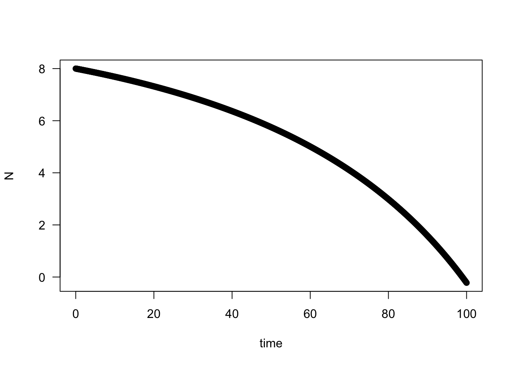

Problem set 2: Single-species models in continuous time
Imagine you are applying your ecology and evolution knowledge to better understand the development of cancer (a burgeoning new field actually1 Merlo et al., 2006. Cancer as an evolutionary and ecological process. Nature reviews cancer, 6(12), p.924.). After metastasizing, cancer spread throughout the body, a single cancer cell reached the patient’s colon. The cancer cell now divides and grows at an exponential rate. Spratt et. al (1996) found that colon cancer had an average doubling time of 109 days. Assume a lethal cancer size is on the order of \(1 \text{x} 10^{12}\) (1 000 000 000 000) cells. How long will it take for the colon tumor to reach this lethal size if left untreated?
One strategy to combat problematic insect species (like malaria-carrying mosquitoes) is to release sterile males to overwhelm the population2 This approach is being used to control Aedes aegypti and Aedes albopictus mosquitoes in the hopes of preventing dengue and yellow fever. The equation below denotes the number of females (F), number of males (M), birth rate (b), and death rate (d). Determine the equilibrium points and the stability of each for the equation. Which equilibrium point tells you the critical threshold for population extinction? How does this relate to the Allee effect?
\[ \frac{dN}{dt} = b\frac{N}{N+M} - d \]
The previous problem did not include any negative density-dependence. To test this assumption, we can include competition in our previous problem. Assuming N=0 is an equilbium point (if N=0, it will not change), modify the code below to estimate the two other equilbrium points and each of their stability. If the population drops below 0, assume it went extinct. You can modify both the initial state value for N or the amount of time (times object) to run the model. When you know the equilbrium points and their stability, sketch a plot of \(b\frac{N}{N+M} - d - cN\) versus \(N\) and show the equilibrium points as open (unstable) or closed (stable) balls.
\[ \frac{dN}{dt} = b\frac{N}{N+M} - d - cN \]
require(deSolve)## Loading required package: deSolve# Initial values
state <- c(N=8)
times <- seq(0,100,by=0.1)
# Parameters
parameters <- c(b = 2.4,c=0.02,M=50,d=0.2)
# Model
sterile_insect <- function(t,state,parameters){
with(as.list(c(state,parameters)),{
dN <- b*N/(N+M) - d - c*N
list(c(dN))
})}
# Solve model and plot results
out <- ode(y = state,times=times,func=sterile_insect,parms=parameters)
par(mfrow=c(1,1))
plot(out[,1],out[,2],ylab='N',xlab='time',las=1)
3 Problems 2 and 3 were borrowed from Sebastian Schreiber